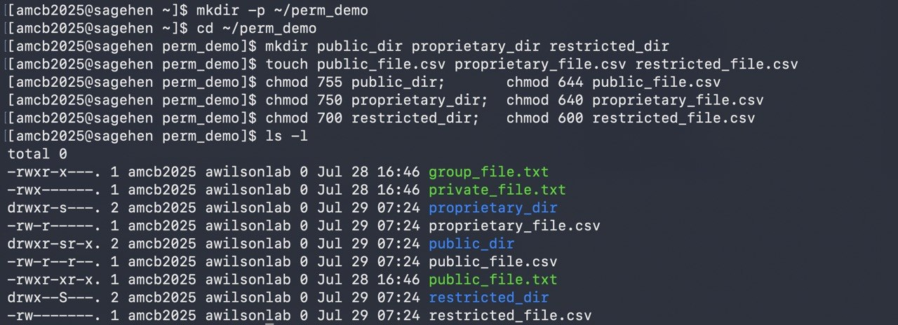

All in One View
Content from Why Data Classification Matters
Last updated on 2026-08-24 | Edit this page
Estimated time: 30 minutes
Overview
Questions
- Why should we classify data instead of treating everything the same?
- What happens if classified data is breached?
- Who is responsible for data classification?
Objectives
- Understand why data classification is essential for research institutions
- Recognize the business, legal, and ethical stakes of data security failures
- Identify your role and responsibility in protecting research data
The Cost of a Data Breach
Imagine this scenario: A biology lab at a mid-size research institution discovers that student genetic data from a research project (including names, phenotypes, and DNA markers) has been exposed on an unsecured server. The data wasn’t encrypted. File permissions were misconfigured. Nobody noticed until a journalist investigating data privacy called the institution with questions.
The Domino Effect of a Data Breach
What follows is: - Notification requirement: Alerting 200+ students of the breach - Regulatory investigation: FERPA violation inquiry from the U.S. Department of Education - Reputational damage: Loss of trust from students, families, and collaborators - Legal liability: Lawsuits from affected students - Operational costs: Incident response, forensics, notifications, credit monitoring - Compliance consequences: Corrective action plan, ongoing audits
This isn’t hypothetical. In 2019, over 500 million research records were breached across higher education institutions. The average cost per institution exceeded $2 million.
At Pomona College, we take a different approach: classify data before it becomes a problem.
The Three-Tier System
Pomona College uses a simple but powerful framework: three tiers, each with specific handling requirements.
┌─────────────────────────────────────────────┐
│ PUBLIC │
│ Encryption: NOT required │
│ Access: Unrestricted or shared with group │
│ Example: Published papers, course materials,│
│ draft research shared with lab │
└─────────────────────────────────────────────┘
↓
┌─────────────────────────────────────────────┐
│ PROPRIETARY │
│ Encryption: RECOMMENDED │
│ Access: Restricted to authorized users │
│ Example: Grant proposals, personnel data │
└─────────────────────────────────────────────┘
↓
┌─────────────────────────────────────────────┐
│ RESTRICTED │
│ Encryption: REQUIRED (AES-256-GCM) │
│ Access: Strict controls + audit logging │
│ Example: Student grades, CUI, export-ctrl │
└─────────────────────────────────────────────┘Why Classification Matters at Pomona
Business Impact
Beyond compliance:
- Research integrity: Unauthorized access can compromise your research validity
- Competitive advantage: Unpublished research or grant proposals are competitive assets
- Institutional reputation: Pomona’s reputation for protecting data affects funding and partnerships
- Insurance coverage: Some data breaches aren’t covered if proper controls weren’t in place
Real-World Scenarios
Scenario 1: The Published Paper Nobody Meant to Share
Dr. Sarah’s lab publishes a genomics study and deposits the processed
dataset in a public repository (appropriately). But on Sagehen, the raw
sequencing files (which can re-identify study participants) were stored
in a standard /bigdata directory with permissive file
permissions. A summer intern accidentally shared access to the entire
directory with a collaborator. The raw data is now partially
exposed.
Problem: Raw data should have been classified as Restricted and encrypted.
Consequence: FERPA violation, breach notification, loss of future research funding.
Prevention: Classify data, implement proper access controls, encrypt Restricted data.
Scenario 2: The Intercepted Grant Proposal
A graduate student transfers a draft grant proposal (marked “Proprietary”) from Sagehen to her laptop via SCP over an unencrypted connection, intending to work on it at home. The data is intercepted by someone on the same coffee shop WiFi. The competitor institution with whom you’re competing for the same grant now knows your approach.
Problem: Proprietary data wasn’t encrypted in transit.
Consequence: Lost funding opportunity, distrust from faculty advisor.
Prevention: Encrypt Proprietary data at rest and in transit; use secure channels like OneDrive+rclone.
Scenario 3: The Oversharing AI Researcher
Dr. James uploads a dataset containing student survey responses to an AI model training service (in the cloud) to improve his analysis. The service’s terms indicate data can be used for model improvement and shared with other customers. He didn’t realize the data is Restricted (contains PII).
Problem: Restricted data left Pomona infrastructure without encryption and safeguards.
Consequence: Student privacy violation, compliance violation, potential legal action.
Prevention: Classify before transferring, de-identify Proprietary/Restricted data, get approval from ORSP/IRB.
Scenario 4: The Helpful Graduate Student
A graduate student, tasked with managing her lab’s data, sets up a shared folder on her personal Dropbox account to make it easier for the team to access files from home. The folder contains draft papers, preliminary data, and some student contact information.
Problem: Confidential institutional data on an unmanaged personal cloud account.
Consequence: Data loss if account is compromised, potential compliance violation, loss of control.
Prevention: Use Pomona-managed Box or OneDrive with encryption; classify all data first.
Your Role and Responsibility
Who Classifies Data?
The Principal Investigator (PI) is responsible for classifying research data before it goes on Sagehen. However:
- You must understand the classification system to implement it correctly
- Your PI sets policy for the lab’s data
- ITS Research Computing reviews classification for DOD-funded projects and CUI
What Happens If You Don’t Classify?
- Default assumption: All unclassified data is treated as Restricted for compliance purposes
- Access restriction: Overly conservative access controls may impede collaboration
- Audit risk: Unclassified data triggers security reviews
- Compliance violation: Failure to classify is itself a policy violation
Bottom line: Classify proactively or face more restrictive (and inconvenient) handling.
Incident Reporting
Report Security Incidents Immediately
If you suspect a data breach or security incident: 1. Stop working with the affected data immediately 2. Email its-hpc@pomona.edu with: - What you observed - When you discovered it - What data may be affected - Any access logs or evidence 3. Don’t investigate further; let ITS handle forensics
Reporting is not a punishment; it’s how we prevent bigger problems.
Challenge 1.1: Cost Estimation
Research the cost of a data breach at a higher education institution. Consider: - Notification and credit monitoring - Legal fees and settlements - Lost funding due to compliance violations - Reputational damage
What’s the average cost to your institution per record breached?
Typical answer: $200–$500 per record. For 1,000 records, that’s $200,000–$500,000 minimum — not including reputational damage, lost research funding, or regulatory sanctions.
- Data classification is mandatory at Pomona College
- Pomona uses three tiers: Public, Proprietary, Restricted
- Restricted data requires encryption (AES-256-GCM) using gocryptfs
- Data breaches have significant business, legal, and reputational costs
- PIs are responsible for classification; you implement it correctly
- Incident reporting is your responsibility; contact its-hpc@pomona.edu immediately if compromised
Content from Regulations and Compliance
Last updated on 2026-08-24 | Edit this page
Estimated time: 30 minutes
Overview
Questions
- Which regulations apply to research at Pomona College?
- What are the consequences of regulatory violations?
- How do I know if my research falls under export control?
Objectives
- Learn about regulatory compliance requirements affecting Pomona College
- Understand FERPA, EAR/ITAR, and NIST SP 800-171 obligations
- Recognize which regulations apply to your research
Legal Compliance
Pomona College is subject to multiple regulations that mandate data protection:
FERPA: Family Educational Rights and Privacy Act
- Protects student education records (grades, assessments, personal information)
- Violation risk: Loss of federal funding, lawsuits
- Your responsibility: Any research involving Pomona students falls under FERPA
EAR/ITAR: Export Administration Regulations / International Traffic in Arms Regulations
- Controls research with military applications or dual-use potential
- Covers: Cryptography, aerospace, semiconductors, biotech, materials science
- Violation risk: Federal criminal charges, loss of export privileges
- Your responsibility: Even basic research can become subject to export control; consult ORSP before publishing
NIST SP 800-171: Safeguarding Controlled Unclassified Information
- Required for any research involving Department of Defense funding
- Mandates specific security controls for CUI data
- Your responsibility: DOD-funded projects must meet 800-171 controls or lose funding
Pomona Information Security Policy
- Institutional requirement for all data stored on college systems
- Defines classification tiers and required controls
- Violation risk: Loss of computing privileges, dismissal
FERPA Data Classification
Not all student data is Restricted. Here’s how FERPA classification works:
| Data | Classification | Reason |
|---|---|---|
| Published study with anonymous aggregated student data | Public | No identification possible; fully public |
| Aggregated class grades (average GPA by major) | Public | No individual identification; shared within institution |
| List of students enrolled in BIOL 101 (with names but no grades) | Proprietary | Directory information, but protected by FERPA |
| Student grades linked to names or identifiers | Restricted | “Education record” under FERPA |
| Survey responses with student names or IDs | Restricted | Counts as education record if conducted by institution |
Export Control: When Your Research Becomes Restricted
Some research isn’t obviously restricted until analysis shows it might have export-control implications:
Chemistry Lab: Developing new catalysts for chemical synthesis - Pure research → Public/Proprietary (early stage, depending on sharing within group or restricted) - Novel catalyst with asymmetric properties → Discuss with ORSP - If applicable to pharmaceutical manufacturing or weapons → Restricted (EAR)
Computer Science Lab: Cryptography research - Academic paper on theoretical security proofs → Public (once published) - Implementation of novel encryption algorithm (before publication) → Restricted (EAR Category 5, Part 2) - Unclassified cryptographic software (even if open-source) → Restricted (EAR until published/reviewed)
Biology Lab: Genomics research - Published analysis of human genome variation → Public - Raw genomic data from participants → Restricted (FERPA + PII) - Research on pathogenic organisms → Restricted (CUI or potential dual-use concern)
Challenge 2.1: Identify the Regulation
For each scenario, identify which regulation(s) apply: 1. A researcher stores student performance data for an education study 2. A lab works on cryptographic algorithms for secure communication 3. A faculty member manages payroll data for lab staff 4. A researcher analyzes publicly available Census data
- FERPA, Pomona ISP — student performance data is an education record
- EAR/ITAR (if novel/advanced crypto), NIST 800-171 (if DOD-funded)
- Pomona ISP — personnel data = Proprietary at minimum
- None specific (Public); standard Pomona ISP applies
- Multiple regulations (FERPA, EAR/ITAR, NIST 800-171) drive Pomona’s data policy
- FERPA protects student education records; violations risk federal funding
- Export controls (EAR/ITAR) apply to cryptography, advanced materials, and dual-use research
- NIST SP 800-171 governs DOD-funded research with CUI
- Pomona’s Information Security Policy applies to all data on college systems
- When in doubt about export control, consult ORSP before sharing or publishing
Content from The Three Tiers Overview
Last updated on 2026-08-24 | Edit this page
Estimated time: 40 minutes
Overview
Questions
- What distinguishes one classification tier from another?
- What security controls are required for each tier?
- What happens if I misclassify data?
Objectives
- Understand the three classification tiers and their defining characteristics
- Learn the security requirements for each tier
- Recognize examples from different research disciplines
Pomona’s Three-Tier Classification System
Data classification at Pomona College follows a simple principle: the more sensitive the data, the more security controls it requires. The three tiers stack on top of each other; Restricted data includes all protections of Proprietary and Public.
Tier 1: PUBLIC
Definition: Data that has been intentionally released for unrestricted use and is freely available to anyone, or data shared openly within Pomona College and authorized groups with no special risk of harm if accessed.
Characteristics
- Availability: Either publicly available worldwide, or freely shared within Pomona/lab groups
- Sensitivity: No harm if accessed by authorized lab members or the public
- Examples: Published research papers, public datasets, course materials, lab notes, draft research shared with lab members, operational data, institutional announcements
- Regulatory concern: None (unless containing other sensitive data)
Key Features
| Aspect | Details |
|---|---|
| Encryption | Not required |
| Access controls | None required for public; group-readable (750) for internal shared data |
| Storage | Anywhere on Sagehen (/rhome or
/bigdata) |
| Sharing | Unrestricted (public) or with lab members (shared within groups) |
| Retention | No special policy |
| Audit logging | Not required |
| File permissions | 755 (public) or 750 (group-shared) |
Two Categories of Public Data
Fully Public: Released to the world - Published manuscripts and supplementary data - Open-source code repositories - Datasets in public repositories (Zenodo, OSF, figshare) - Institutional announcements and public reports
Shared Internal to Groups: Freely available within Pomona/lab - Lab notebooks and research journals (shared with group) - Preliminary analysis and working drafts (not yet published) - Operational data (schedules, lab protocols, meeting notes) - Course materials and lecture notes - Raw data during analysis phase (before publication)
Examples from Pomona Research
- Published manuscript: “Optimal metabolic pathway design using constraint-based modeling” published in Nature Biotechnology with data on GitHub
- Open-source code: Lab maintains public GitHub repository for molecular simulation software
- Course materials: Lecture notes, practice problems, and datasets for BIOL 101
- Lab notebook: Digital research journal shared among the lab (but not published)
- Data in progress: Raw measurements shared with lab members during analysis
- Institutional data: Published class schedule, faculty directory, graduation statistics
- Data from public repositories: Census data, genomics data from NCBI, weather data from NOAA
Safeguards (Still Important!)
Even though Public data needs no special protection: - Verify before sharing: Confirm data was actually approved for public release - Attribution: Respect intellectual property and attribution requirements - Version control: Clearly mark which version is public (some research evolves) - Metadata: Include proper documentation so others can use it correctly - Confidentiality agreements: Respect collaboration terms for internally shared data
Summary Table
| Requirement | PUBLIC (green) | PROPRIETARY (orange) | RESTRICTED (red) |
|---|---|---|---|
| Permissions | 755 | 750 | 700 + gocryptfs |
| Encryption | Not required | Recommended | REQUIRED (AES-256-GCM) |
| Audit logging | Not required | Optional | REQUIRED |

ls -l will show an s where these examples show
plain modes.Permission variant on PROPRIETARY: a
600(user-only) variant may be appropriate for sub-team-only or single-PI files within a PROPRIETARY workflow. It is a variant of PROPRIETARY handling, not a separate tier — encryption is still optional and the data still belongs to the orange tier. Files needing user-only and strong protection belong in RESTRICTED (700 + gocryptfs).
There Are Three Tiers, Not Four
Pomona’s classification model has exactly three tiers: PUBLIC, PROPRIETARY, RESTRICTED. There is no fourth “INTERNAL” tier. If you encounter “INTERNAL” in legacy materials, treat it as PUBLIC (intra-group sharing) or PROPRIETARY (sensitive lab work). The April 2026 standardization removed the fourth tier to eliminate ambiguity.
Challenge 3.1: Classify Pomona Research Datasets (Part 1)
For each dataset, identify the appropriate classification and explain your reasoning: 1. BIOL 101 Course Data: - Student names, email addresses, class schedule - Published aggregated grade distribution (average GPA by major) 2. Economics Research: - Aggregated economic indicators from public Census data - Survey responses from 500 households (de-identified but with geographic location)
- Student names + email + class schedule → RESTRICTED (FERPA-protected education record). Note: student names alone may be directory information unless the student has opted out, but the moment they’re paired with academic records (class schedule, grades, course enrollment), the dataset becomes a FERPA-protected education record requiring RESTRICTED-tier handling (700 + gocryptfs). Aggregated grade distribution (no individual identification) → PUBLIC.
- Census data → PUBLIC (already public, freely available); survey with location → PUBLIC (aggregated, de-identified) or PROPRIETARY if sensitive topics requiring restricted access
- Public data is either fully publicly available or freely shared within lab/groups; no special handling required
- File permissions: PUBLIC=755 (canonical)
- Public data still requires attribution and version control
- Two categories exist: fully public and shared internal to groups
- Classification determines where data is stored and how it’s protected
Content from Identifying Data Types
Last updated on 2026-08-24 | Edit this page
Estimated time: 40 minutes
Overview
Questions
- How do I know if my data is Proprietary or Restricted?
- What makes data Restricted versus Proprietary?
- What are common examples of each tier?
Objectives
- Understand the Proprietary and Restricted tiers in detail
- Identify which tier applies to specific research data
- Recognize examples of Proprietary and Restricted data across disciplines
Tier 2: PROPRIETARY
Definition: Data that provides competitive or institutional advantage and would cause harm if disclosed to unauthorized parties. Access is restricted to specific authorized individuals. Examples include unpublished research, grant proposals, sensitive personnel data, and data needing group-level access control beyond simple sharing.
Characteristics
- Availability: Restricted to specific authorized individuals (may be broader than one person, but not unrestricted)
- Sensitivity: Loss or disclosure would cause business/institutional/competitive harm; or contains sensitive information requiring controlled access
- Examples: Grant proposals, unpublished research findings, patent disclosures, business plans, salary information, data requiring departmental/group-level access controls
- Regulatory concern: Varies; may involve intellectual property or institutional policy
Key Features
| Aspect | Details |
|---|---|
| Encryption | Recommended, especially for sensitive proprietary data |
| Access controls | User-level or group-level restrictions (specific individuals or authorized group members) |
| Storage |
/rhome or /bigdata with 750 permissions
(canonical PROPRIETARY) |
| Sharing | Restricted; requires explicit authorization |
| Retention | Until publication or as specified by PI |
| Audit logging | Recommended for highly sensitive data |
| Transfers | Use secure channels; encryption recommended |
| File permissions | 750 (canonical PROPRIETARY). A 600 (user-only) variant is acceptable for sub-team-only files but is a variant of PROPRIETARY handling, not a separate tier. |
Examples from Pomona Research
-
Grant proposal (pre-award): NSF CAREER proposal
being prepared; not yet submitted
- Why Proprietary? Competitive; other labs might be pursuing similar ideas
- Classification changes: Becomes Public after award announcement
-
Patent disclosure: Novel data suggesting patentable
methodology
- Why Proprietary? Patent novelty requires non-disclosure until filing
- Classification changes: Becomes restricted once patent filed (legal privilege)
-
Unpublished novel findings: Preliminary data
showing unexpected biological phenomenon
- Why Proprietary? Competitive advantage if first to publish
- Classification changes: Becomes Public once published
-
Industry collaboration data: Preliminary results
from partnership with a biotech firm
- Why Proprietary? Contractual confidentiality clause
- Classification changes: Determined by collaboration agreement
-
Personnel data: Staff salaries, performance
reviews, contact information
- Why Proprietary? Privacy and institutional policy
- Classification changes: Remains Proprietary indefinitely (or moves to Restricted if PII)
Encryption Recommendation for Proprietary Data
While not required, encryption is strongly recommended for Proprietary data because: - Grant proposals are highly valuable - Unencrypted data on shared clusters can be breached (misconfigured permissions) - Intellectual property loss has lasting consequences - Encryption requires minimal effort with modern tools
Tier 3: RESTRICTED
Definition: Data that is strictly confidential and requires the highest level of protection. Unauthorized access could result in legal liability, regulatory violation, privacy harm, or security risk. Encryption is mandatory.
Characteristics
- Availability: Strictly limited to authorized individuals; audit trails required
- Sensitivity: Disclosure would violate law, regulation, or privacy rights
- Examples: Student education records (FERPA), export-controlled research (EAR/ITAR), personally identifiable information (PII), health information (HIPAA), Controlled Unclassified Information (CUI)
- Regulatory concern: High; violations can result in federal penalties
Key Features
| Aspect | Details |
|---|---|
| Encryption | REQUIRED (AES-256-GCM via gocryptfs) |
| Access controls | Strict user-level controls; specific authorization required |
| Storage |
/rhome or /bigdata in encrypted
container |
| Sharing | Extremely restricted; institutional/legal approval required |
| Retention | Governed by regulation or legal requirement |
| Audit logging | REQUIRED; all access must be logged |
| Transfers | Prohibited without encryption in transit; approved channels only |
| Destruction | Secure deletion required at end of retention period |
| File permissions | 700+gocryptfs (encrypted container with strict access) |
Examples from Pomona Research
FERPA-Protected Data (Student Education Records) - Student grades from a research study - Student names linked to academic performance data - Email addresses combined with performance metrics - Encryption: REQUIRED - Access: Only researchers and authorized staff
Export-Controlled Research (EAR/ITAR) - Advanced materials research potentially useful for military applications - Cryptographic algorithms and implementations - Semiconductor design specifications - Biotech dual-use research of concern (DURC) - Encryption: REQUIRED - Access: Only authorized personnel (typically U.S. citizens on approved projects)
Personally Identifiable Information (PII) - Names + social security numbers - Names + financial information (bank accounts, credit cards) - Genetic data linked to identifiable information - Medical records - Encryption: REQUIRED - Access: Only individuals with explicit need-to-know
Controlled Unclassified Information (CUI) - Research data funded by Department of Defense - Cybersecurity/critical infrastructure research - Biological agents research data - Encryption: REQUIRED - Audit logging: REQUIRED
Challenge 4.1: Classify Pomona Research Datasets (Part 2)
For each dataset, identify the appropriate classification and explain your reasoning: 1. Neuroscience Lab Dataset: - fMRI brain scans from participants (no names, coded with ID numbers) - Demographic data: age, gender (de-identified, statistical summary only) - Raw brain images linked to participant ID codes 2. Chemistry Lab Dataset: - Synthesis procedures for novel catalysts (before publication) - Final published paper in Nature Chemistry with all data
- fMRI scans without names → Proprietary (valuable research asset); demographic summary → Public (aggregated, shared within group); raw images linked to IDs → Restricted (re-identification risk)
- Pre-publication procedures → Proprietary (competitive); published paper → Public
- Proprietary data is restricted to specific authorized individuals; encryption recommended
- Restricted data requires mandatory encryption (AES-256-GCM via gocryptfs) and audit logging
- File permissions: PUBLIC=755, PROPRIETARY=750 (canonical; 600 variant for sub-team-only files), RESTRICTED=700+gocryptfs
- FERPA, EAR/ITAR, CUI, and PII data are automatically Restricted
- When in doubt, classify conservatively and ask your PI
Content from The Classification Process
Last updated on 2026-08-24 | Edit this page
Estimated time: 40 minutes
Overview
Questions
- How do I classify my specific research datasets?
- What information do I need to make good classification decisions?
- When should I ask for help?
Objectives
- Apply Pomona’s classification system to your own research data
- Use the decision tree to classify datasets systematically
- Recognize when to consult your PI or ORSP
The Classification Workflow
Classifying data is not a one-time event; it’s an ongoing process as your research evolves. Here’s the workflow:
1. Inventory your data
↓
2. Understand the content
↓
3. Apply classification rules
↓
4. Implement handling requirements
↓
5. Monitor and re-classify as neededStep 1: Inventory Your Data
Before you can classify, you need to know what you have.
Creating a Data Inventory
For each research project or lab, list:
| Item | Example |
|---|---|
| Project name | “Human gut microbiome and metabolic syndrome” |
| Data type | Raw sequencing reads, metadata, analysis results |
| Data location | /bigdata/lab/<labname>/project_A |
| Size | 5 TB raw data |
| Source | Sequencing facility, clinical partner institution |
| People who need access | PI (Dr. Smith), postdoc (Jane), graduate students (Tom, Maria) |
| Retention requirement | 7 years (NIH requirement) |
| Special handling | IRB-approved study with human subjects |
Sample Inventory Template
Lab Data Classification Inventory
==================================
Project: [Project Title]
PI: [PI Name]
Date: [Date]
Dataset 1: [Name]
├─ Description: [What is this data?]
├─ Size: [GB/TB]
├─ Source: [Where did it come from?]
├─ Contains PII? [Yes/No]
├─ Contains export-controlled tech? [Yes/No]
├─ Student data? [Yes/No]
├─ Health data? [Yes/No]
├─ Current classification: [Public/Proprietary/Restricted]
└─ Reason: [Why this classification?]
Dataset 2: [Name]
├─ [Same fields...]Use this template to document your data inventory for audit purposes.
Step 2: Understand the Content
Classification depends on understanding what your data contains and implies, not just its format.
Key Questions to Ask
| Dimension | Question | Implication |
|---|---|---|
| Origin | Published repository? | Likely Public |
| Human subjects study? | Likely Restricted if identifiable | |
| DOD-funded? | Likely Restricted (CUI) | |
| Content | Contains names/IDs linked to sensitive info? | Restricted |
| Contains health data with identifiers? | Restricted (HIPAA) | |
| Contains export-controlled tech? | Restricted (EAR) | |
| Aggregated/anonymized? | Public or Proprietary | |
| Context | Pre-publication competitive asset? | Proprietary |
| Already published? | Public | |
| Privacy/legal harm if disclosed? | Restricted |
Step 3: Apply Classification Rules
Use the decision tree systematically.
The Systematic Approach
Rule 1: Check for Regulatory Triggers (Automatic Restricted)
Is ANY of the following true?
├─ Contains student education records? → RESTRICTED (FERPA)
├─ Contains health information linked to individuals? → RESTRICTED (HIPAA)
├─ Contains export-controlled research? → RESTRICTED (EAR/ITAR)
├─ Contains CUI or DOD-funded data? → RESTRICTED (NIST 800-171)
└─ If YES to any → **STOP. CLASSIFY AS RESTRICTED.**
If NO → Continue to Rule 2.Rule 2: Check for Proprietary Triggers
Is ANY of the following true?
├─ Contains PII or sensitive personal information? → PROPRIETARY (min)
├─ Unpublished novel findings (competitive asset)? → PROPRIETARY
├─ Grant proposal, patent, or IP disclosure? → PROPRIETARY
├─ Sensitive institutional data (salary, strategy)? → PROPRIETARY
└─ If YES to any → Classify as PROPRIETARY (or Restricted if also regulatory trigger)
If NO → Continue to Rule 3.Rule 3: Check for Public Triggers
Is ANY of the following true?
├─ Already published or intended for public use? → PUBLIC
├─ Freely shared within lab group? → PUBLIC
├─ Preliminary or in-progress data (shared with group)? → PUBLIC
├─ Data with no access restrictions? → PUBLIC
└─ If YES to any AND no regulatory/proprietary concerns → Classify as PUBLICChallenge 5.1: Classify Your Own Data
Using the systematic approach from this episode: 1. Choose a dataset from your own research 2. Apply the three rules (Regulatory → Proprietary → Public) 3. Document your reasoning 4. Identify anyone who needs access 5. Note any questions/escalations needed
Here is an example for a fictional genomics dataset:
DATASET: Sagehen Meadow Vole Whole-Genome Sequences
Regulatory Check:
- FERPA applies? No (no student education records)
- HIPAA applies? No (non-human species)
- Export-control applies? No (basic ecological research)
- CUI applies? No (NSF-funded, no DOD involvement)
Proprietary Check:
- Contains PII? No (wildlife data, no human subjects)
- Novel unpublished findings? Yes — first population genomics
study of meadow voles in the Sagehen basin
- Competitive asset? Yes — two other labs studying the same
species; first-to-publish advantage
Classification Decision:
- Tier: PROPRIETARY
- Reasoning: No regulatory triggers, so not Restricted. However,
the dataset contains novel unpublished findings with competitive
value. Classify as Proprietary until the manuscript is accepted
for publication, then reclassify to Public and deposit in NCBI SRA.- Inventory your data: know what you have before classifying
- Understand content: ask whether your data contains PII, health info, export-controlled tech
- Apply rules systematically: check Regulatory triggers first, then Proprietary, then Public
- Classification is not a one-time event; re-classify as research evolves
- Ask for help: consult PI, ORSP, or ITS when uncertain
Content from Decision Framework
Last updated on 2026-08-24 | Edit this page
Estimated time: 40 minutes
Overview
Questions
- How do I document my classification for the audit trail?
- What are the most common classification mistakes?
- How do I handle reclassification as research evolves?
Objectives
- Use the classification decision tree to classify any dataset
- Document classification decisions for auditing
- Recognize common classification mistakes and how to avoid them
Classification Decision Tree
Use this flowchart to classify your data:
START: New dataset or file
│
├─> Does it contain student education records?
│ (grades, performance data, assessment results linked to students)
│ YES → RESTRICTED (FERPA)
│ NO → Continue
│
├─> Does it contain legally protected health information?
│ (names + medical conditions, health data, genetic data)
│ YES → RESTRICTED (HIPAA/Privacy)
│ NO → Continue
│
├─> Does it contain export-controlled research?
│ (cryptography, advanced materials, dual-use bio research)
│ YES → RESTRICTED (EAR/ITAR)
│ UNCERTAIN → Consult ORSP
│ NO → Continue
│
├─> Does it contain CUI or DOD-funded research data?
│ YES → RESTRICTED (NIST 800-171)
│ NO → Continue
│
├─> Does it contain any personally identifiable information?
│ (names, SSN, financial info, genetic data, sensitive personal info)
│ YES → PROPRIETARY (minimum; may be Restricted if sensitive)
│ NO → Continue
│
├─> Does it contain sensitive institutional data?
│ (unpublished research, grant proposals, business plans, salaries)
│ YES → PROPRIETARY
│ NO → Continue
│
├─> Is it restricted to specific authorized individuals?
│ (only certain people can access, not the entire group)
│ YES → PROPRIETARY
│ NO → PUBLIC (freely available or shared openly within lab/groups)Decision Documentation
Once you’ve classified, document your decision. This serves two purposes: 1. Audit trail: Shows you thought carefully about classification 2. Consistency: Helps team members re-classify correctly if you leave
Classification Decision Form
DATA CLASSIFICATION DECISION RECORD
===================================
Project: [Name]
Date: [Date]
Classified by: [Name]
Dataset: [Dataset name/description]
Location: /bigdata/lab/<labname>/project_X
CLASSIFICATION DECISION: [PUBLIC / PROPRIETARY / RESTRICTED]
CLASSIFICATION REASONING: [Which rules triggered this classification]
REGULATORY FRAMEWORKS: [FERPA / HIPAA / EAR-ITAR / NIST 800-171 / Pomona ISP]
HANDLING: [Encryption / Access controls / Audit logging / De-id plan / Retention]
PEOPLE WHO NEED ACCESS: [Name/Role list]
RETENTION: [Until publication / 7 years / indefinite / etc.]
QUESTIONS: [Uncertainties requiring PI/ORSP review]Store classification records in a shared lab document (e.g.,
/bigdata/lab/<labname>/DATA_CLASSIFICATION_LOG.md),
accessible to your PI, updated when classification changes, and reviewed
annually.
When to Ask for Help
- Consult your PI when uncertain about export control, collaboration agreements, human subjects, external sharing, or reclassification
- Consult ORSP for export control questions, IRB/FERPA applicability, CUI handling, or dual-use research concerns
- Consult ITS (its-hpc@pomona.edu) for classification decisions, encryption setup, access controls, or incident reporting
Common Misclassifications
Too High (Overly Restrictive)
Scenario: A researcher classifies all lab data as Restricted because she thinks “better safe than sorry.”
Problem: - Impedes legitimate collaboration - Creates unnecessary encryption overhead - Leads to audit fatigue (too much data flagged for review)
Fix: Use the decision tree; be precise about what’s actually sensitive.
Too Low (Inadequately Protective)
Scenario: A researcher classifies student survey data as Public because it’s “only shared with the lab.”
Problem: - Violates FERPA (student data is Restricted) - Creates legal/compliance liability - Not discoverable during audit until breach occurs
Fix: Classify conservatively; when in doubt, ask your PI or contact its-hpc@pomona.edu
Classifying by Format, Not Content
Wrong: “All .xlsx files are Public because they’re spreadsheets”
Right: “This .xlsx contains student test scores, so it’s Restricted. That .xlsx contains lab budget summaries, so it’s Public.”
→ Content and context matter, not file type.
Never Changing Classification
Wrong: “I classified this as Proprietary six months ago, so it stays Proprietary forever”
Right: “I classified this as Proprietary when it was a draft paper. Now it’s published, so it’s Public.”
→ Re-classify regularly as your research evolves.
Challenge 6.1: Reclassification Scenario
A researcher is wrapping up her PhD project. Her data evolution: 1. Year 1 (Raw data): Classification → ? - Lab is generating new datasets from a collaborator’s samples - No publications yet - Shared among 5 lab members 2. Year 2 (Analysis): Classification → ? - Novel findings (unexpected mechanism) - Writing first manuscript - Preparing to submit to Nature 3. Year 3 (Publication): Classification → ? - Paper is published in open-access journal - Lab publishes data on public repository (GitHub)
For each stage, determine: - What is the appropriate classification? - What changed from previous stage? - What handling requirements apply?
- Public (shared freely within group during raw data stage)
- Proprietary (novel findings, competitive advantage during manuscript review)
- Public (published and deposited in public repository)
Re-classification required at each transition!
Challenge 6.2: Real-World Classification
A computer science researcher is working on a deep learning model for medical image analysis. Her dataset includes: - 10,000 chest X-ray images - Patient age and gender (de-identified with code numbers) - Radiologist diagnoses (labeled as positive/negative for pneumonia)
She wants to: 1. Share the dataset with a collaborator at another university 2. Upload the dataset to a cloud service for training models 3. Publish the dataset for reproducibility
For each action, determine: - What classification does this data require? - What are the barriers to this action? - What would you recommend?
Classification: Restricted (health information + potential re-identification from image metadata + diagnosis data)
Barriers: - HIPAA-covered entity (if hospital data) - Re-identification risk (even de-identified X-rays can identify individuals) - Legal/ethical constraints on external sharing
Recommendations: 1. Collaborator sharing: Collaboration agreement required; encrypted transfer; access to encrypted instance only 2. Cloud training: Use DEA or BAA; encrypt data in transit/at rest; consider federated learning instead 3. Publishing: Publish only heavily de-identified version (aggregated results); keep raw data restricted
- Use the decision tree to classify systematically: check regulatory triggers first
- Document decisions: create an audit trail for classification choices
- Re-classify regularly: as research evolves (publication, sharing, retention end)
- Avoid common mistakes: classifying by format, over-classifying, or never reclassifying
- Implement requirements: classification is meaningless without proper handling
Content from Handling PUBLIC Data
Last updated on 2026-08-24 | Edit this page
Estimated time: 25 minutes
Overview
Questions
- What access controls are needed for Public data?
- Where should Public data be stored on Sagehen?
- What permissions should I set for Public files?
Objectives
- Understand the specific handling requirements for PUBLIC data
- Implement access controls appropriate to Public data
- Set up storage for Public data on Sagehen
PUBLIC Data Handling Requirements
Access Control
Who can access: Anyone (unrestricted) or lab group (shared)
Default file permissions: world-readable (755) or group-readable (750)No special access control is needed. Public data is by definition available to the world or freely shared within groups.
Storage
-
Location: Anywhere on Sagehen (
/rhomeor/bigdata) - Encryption: Not required (not recommended; unnecessary overhead)
- File system: Standard Sagehen filesystem
Example: Published Dataset
BASH
# Published paper's supplementary data
/bigdata/lab/<labname>/published_paper_2025/
├── README.md (DOI, citation info)
├── data_clean.csv
├── analysis.R
└── figures/
# Permissions (world-readable)
ls -l /bigdata/lab/<labname>/published_paper_2025/
-rw-r--r-- 1 pi_user lab_group 500M data_clean.csv
-rw-r--r-- 1 pi_user lab_group 50K analysis.RStorage Layout for Public Data
Practical Exercise: Set Up Public Data Access
BASH
# Check your lab group
groups
# Set directory permissions for Public shared data
chmod g+rx /bigdata/lab/<labname>/public/
find /bigdata/lab/<labname>/public/ -type f -exec chmod 640 {} \;
find /bigdata/lab/<labname>/public/ -type d -exec chmod 750 {} \;
# Verify
ls -ld /bigdata/lab/<labname>/public/
ls -l /bigdata/lab/<labname>/public/data.csvChallenge 7.1: Public Data Setup
You have two datasets to store: 1. Published paper data (CSV, 5 GB) – fully public 2. Lab meeting notes (Markdown, 5 MB) – shared with lab group
For each: - Choose the storage location (/rhome or
/bigdata) - Set the correct permissions - Explain whether
encryption is needed
- Published data →
/bigdata(large dataset) → permissions 755 → no encryption needed - Lab meeting notes →
/bigdata(shared with group) → permissions 750 → no encryption needed
- Public data: World-readable (755) or group-readable (750); no encryption needed
- Use
/bigdatafor large public datasets;/rhomeis acceptable for small files - No audit logging or special retention required for Public data
- Still verify data was approved for public release before sharing
Content from Handling PROPRIETARY Data
Last updated on 2026-08-24 | Edit this page
Estimated time: 35 minutes
Overview
Questions
- Who can access Proprietary data, and how do I enforce access?
- What’s the difference in handling between Proprietary and Restricted?
- How do I share Proprietary data with external collaborators?
Objectives
- Understand the specific handling requirements for PROPRIETARY data
- Implement access controls for Proprietary data on Sagehen
- Manage external sharing of Proprietary data securely
PROPRIETARY Data Handling Requirements
Access Control
Access: Specific authorized individuals or designated group members (not all lab members) Default file permissions: owner only (600) or group-restricted (750)
BASH
# Proprietary lab data (grant proposals, unpublished research, restricted datasets)
/bigdata/lab/<labname>/proprietary/
├── grant_proposal_2025/
│ ├── proposal_draft.pdf
│ └── budget_narrative.doc
└── unpublished_findings_2024/
├── data_analysis.xlsx
└── manuscript_draft.docx
# Example 1: Permissions for PI-only access
ls -l /bigdata/lab/<labname>/proprietary/
drwx------ 5 pi_user pi_user 500K grant_proposal_2025/
-rw------- 1 pi_user pi_user 500K proposal_draft.pdf
# Example 2: Permissions for restricted group access (e.g., senior lab members only)
drwxr-x--- 5 pi_user senior_group 400K unpublished_findings_2024/
-rw-r----- 1 researcher senior_group 200M data_analysis.xlsxSetting Up Proprietary Access
Step 1: Identify authorized users
Work with your PI to list who needs access: - PI - Postdocs directly involved - Specific grad students (not entire group) - External collaborators (rare; requires explicit approval)
Step 2: Set permissions
BASH
# For PI-owned files (PI is owner)
chmod 600 /bigdata/lab/<labname>/proprietary/grant_proposal_2025/*
ls -l /bigdata/lab/<labname>/proprietary/grant_proposal_2025/
-rw------- 1 pi_user pi_user ...
# For co-owned files (PI and one other person)
# Option A: PI grants explicit access via shared directory
mkdir /bigdata/lab/<labname>/proprietary/grant_proposal_2025/shared_draft/
chmod 700 /bigdata/lab/<labname>/proprietary/grant_proposal_2025/shared_draft/
# Option B: Use encryption (recommended; see Episode 10)Storage Options
Option A: Unencrypted + restrictive permissions (for less sensitive proprietary data)
Location: /bigdata with 600 permissions
Encryption: Not required
Advantages: Fast, easy
Disadvantages: Vulnerable to local privilege escalationOption B: Encrypted (recommended for sensitive proprietary data)
Location: /rhome or /bigdata with gocryptfs
Encryption: AES-256-GCM
Advantages: Resistant to breach even if permission misconfiguration occurs
Disadvantages: Slight performance overhead (see Episode 10)Audit Logging
Optional but recommended for sensitive proprietary data: - Track who accessed which files - Useful if breach is suspected - Can detect unauthorized access attempts
Handling External Sharing
If you need to share Proprietary data with external collaborators:
- Collaboration agreement: Ensure written agreement exists
- Encryption in transit: Use SSH/SFTP, never plain FTP
- Controlled access: Time-limit access; revoke when done
- Audit trail: Log who accessed what
Example:
Practical Exercise: Set Up Proprietary Data Access
BASH
# Create proprietary directory
mkdir -p /bigdata/lab/<labname>/proprietary/grant_proposal_2025
# Set permissions: owner only
chmod 700 /bigdata/lab/<labname>/proprietary/
chmod 600 /bigdata/lab/<labname>/proprietary/grant_proposal_2025/*
# Verify
ls -ld /bigdata/lab/<labname>/proprietary/
ls -l /bigdata/lab/<labname>/proprietary/grant_proposal_2025/Challenge 8.1: Set Up Proprietary Access Controls
Scenario: You have a lab with: - Draft grant proposal (PI-only access) - Unpublished research findings (PI + 2 grad students)
For each: 1. Identify the appropriate file permissions 2. Describe who can access what 3. Explain how you’d enforce access (what commands)
Grant proposal (PI-only): - Permissions: 600 (owner
only) - Who can access: PI only - Enforcement:
chmod 600 grant_proposal/*; only PI owns the files
Unpublished findings (PI + 2 grad students): -
Permissions: 750 (group-restricted) - Who can access: PI + approved grad
students via a Unix group - Enforcement:
chgrp approved_group unpublished_findings/ +
chmod 750; group retains access control
- Proprietary data: Group-readable (750) or owner-only (600); optional encryption for sensitive assets
- Access control is enforced through file permissions, not trust
- External sharing requires collaboration agreement + secure transfer + time-limited access
- Retention varies by use case; reclassify to Public after publication
Content from Handling RESTRICTED Data
Last updated on 2026-08-24 | Edit this page
Estimated time: 40 minutes
Overview
Questions
- What security controls are mandatory for Restricted data?
- How do I set up audit logging for compliance?
- How long must I retain data, and how do I delete it securely?
Objectives
- Understand the specific handling requirements for RESTRICTED data
- Implement mandatory encryption and audit logging
- Manage access authorization lists and secure deletion
RESTRICTED Data Handling Requirements
Storage (Mandatory Encryption)
Restricted data MUST be stored in an encrypted container. Standard permissions are not sufficient.
All Restricted data lives in a gocryptfs encrypted container
├─ Passphrase protects access (AES-256-GCM)
├─ Mounted at user's request
├─ Unmounted when not in use
└─ Requires authorization to mountSetting Up Restricted Access
Step 1: Create encrypted container (see Episode 10 for full details)
BASH
# Initialize encrypted container
gocryptfs-init /bigdata/lab/<labname>/restricted_encrypted_base
# Creates:
# /bigdata/lab/<labname>/restricted_encrypted_base/ (encrypted files)
# /rhome/<myusername>/.config/gocryptfs/... (passphrase storage)Step 2: Mount when needed
BASH
# Mount encrypted container
gocryptfs /bigdata/lab/<labname>/restricted_encrypted_base /rhome/<myusername>/restricted
# Encrypted data is now accessible
cd /rhome/<myusername>/restricted/
ls -lStep 3: Access control within encrypted container
Even within encrypted container, use file permissions:
BASH
# Within mounted encrypted container
/rhome/<myusername>/restricted/
├── student_data/
│ └── survey_responses_2024/
│ ├── approved_researcher_1/ (readable by researcher_1 only)
│ └── approved_researcher_2/ (readable by researcher_2 only)
# Permissions within encrypted container
-rw------- 1 researcher_1 lab_group
-rw------- 1 researcher_2 lab_groupAudit Logging (REQUIRED)
Every access to Restricted data must be logged.
Option A: Manual access log (simplest)
BASH
# Before accessing restricted data, log it
date >> /rhome/<myusername>/RESTRICTED_ACCESS_LOG.txt
echo "User: $(whoami), File: survey_data.csv, Action: READ" \
>> /rhome/<myusername>/RESTRICTED_ACCESS_LOG.txt
# Example entry:
# Thu Mar 06 14:23:45 PDT 2025
# User: jane_postdoc, File: student_grades.csv, Action: READOption B: Automated logging (recommended)
BASH
# Set up automatic audit via auditd (with ITS help)
# Logs all reads/writes to encrypted container
auditctl -w /rhome/<myusername>/restricted/ -p rwa -k restricted_access_log
# View logs:
ausearch -k restricted_access_logOption C: SFTP access logging (for transfers)
Who Can Access Restricted Data?
Create an explicit access list documenting: the dataset name and classification, each authorized user (name, role, scope of access, who approved), unauthorized categories (e.g., summer interns not approved by IRB), and revocation triggers (user leaves lab, project ends, annual review expires). Store this alongside your classification decision record.
Handling Transfers of Restricted Data
Never transfer Restricted data unencrypted. Use: (A) copy within the encrypted container, (B) SCP/SFTP over SSH, or (C) Pomona-managed Box/OneDrive with encryption. Never use plain FTP, email attachments, unencrypted USB drives, or personal cloud storage.
Retention and Secure Deletion
Retention Requirements
| Type | Retention | Reason |
|---|---|---|
| FERPA student records | 3-7 years (per FERPA) | Education records |
| HIPAA health data | 6 years minimum (per HIPAA) | Health information |
| CUI/DOD data | Per contract (typically 5-7 years) | NIST 800-171 requirement |
| Research data | Per funding agency (typically 3-7 years) | NIH, NSF requirements |
| Export-controlled | Until publication or declassification | EAR/ITAR requirement |
Document retention requirements in your classification record.
Secure Deletion
At end of retention period, data must be securely deleted (not just removed):
BASH
# Insecure deletion (Don't do this!)
rm /path/to/restricted/data.csv
# File is removed from directory but recoverable from disk
# Secure deletion (Do this!)
shred -vfz /path/to/restricted/data.csv
# Overwrites file with random data multiple times before deletionChallenge 9.1: Audit Logging Scenario
A researcher is working with FERPA-protected student data. For the next week: 1. Keep a manual access log every time you access the data 2. Record: date, time, user, file name, action (read/write/delete) 3. Review the log at week’s end
Example log entry:
2025-03-06 14:23:45 jane_postdoc survey_responses.csv READ
2025-03-06 15:10:22 jane_postdoc analysis.R WRITE
2025-03-07 09:15:10 jane_postdoc student_grades.csv READAfter one week: - How many accesses occurred? - Who accessed what? - Were there any unusual patterns?
Here is an example completed one-week access log:
RESTRICTED DATA ACCESS LOG
===========================
Dataset: student_learning_survey_2025 (FERPA-protected)
Week of: 2025-03-03 to 2025-03-07
DATE USER FILE ACTION
2025-03-03 09:12:33 jgarcia survey_responses.csv READ
2025-03-03 09:45:10 jgarcia analysis_cleaning.R WRITE
2025-03-04 10:05:22 jgarcia survey_responses_clean.csv WRITE
2025-03-05 11:30:00 jgarcia survey_responses_clean.csv READ
2025-03-06 09:42:33 jgarcia regression_results.csv WRITE
2025-03-07 13:15:08 jgarcia survey_responses.csv READObservations: - Total accesses: 6
entries across 5 working days - Who accessed: Only
jgarcia (sole authorized analyst) -
Pattern: READ operations at start of day, WRITE
operations follow – normal analytical workflow -
Recommendation: For ongoing work, set up automated
auditd logging
- Restricted data: Owner-only (700) PLUS mandatory encryption (AES-256-GCM via gocryptfs); audit logging required
- Every access to Restricted data must be logged for compliance
- Create explicit access authorization lists; review annually
- Retention and secure deletion are required by regulation; use
shrednotrm - Never transfer Restricted data unencrypted; use SSH/SCP or institutional channels
Content from Storage and Encryption
Last updated on 2026-08-24 | Edit this page
Estimated time: 50 minutes
Overview
Questions
- Where should each classification tier be stored on Sagehen?
- What is gocryptfs and why do we use it?
- How do I create and mount an encrypted container?
- How do I ensure encrypted data is backed up securely?
Objectives
- Understand Sagehen storage options (
/rhomevs./bigdata) - Learn when and how to use gocryptfs for encrypting Restricted data
- Implement encrypted containers for sensitive research data
- Manage encrypted volumes: mounting, unmounting, backup
Sagehen Storage Architecture
Storage Options
Sagehen provides two main storage spaces for research data:
Sagehen HPC Cluster Storage
================================
/rhome /bigdata
├─ Home directories ├─ Shared project storage
├─ ~100 GB per user ├─ ~1 TB per lab
├─ Fast SSD ├─ Large capacity (BeeGFS)
├─ Backed up (6-month retention) ├─ Not backed up
├─ Per-user quotas └─ Shared across group
└─ Good for: Small files, code
Encrypted containers, Good for: Raw data, analysis,
active work large files, archivesNote: /rhome and /bigdata share a 1 TB
quota on BeeGFS.
Encryption with gocryptfs
Pomona requires AES-256-GCM encryption for Restricted data. gocryptfs creates encrypted directories on the filesystem – like a virtual encrypted hard drive inside your normal file system. It is ideal because it requires no root access, uses per-directory encryption, and performs well for HPC workflows.
Step 1: Create an Encrypted Container
BASH
cd /rhome/<myusername>/
# Create directory structure
mkdir -p encrypted_base # Encrypted files (unreadable without passphrase)
mkdir -p restricted # Mount point (where files appear decrypted)
# Initialize encrypted container
gocryptfs -init encrypted_base/
# When prompted, choose:
# 1: AES-256-GCM (Recommended)When prompted for password:
DO:
✓ Use strong password (14+ characters per NIST SP 800-63B)
✓ Store password securely (password manager, not file)
✓ Make it unique (not your Pomona password)
DON'T:
✗ Use weak password (password, 123456, etc.)
✗ Store password in a file
✗ Share password with anyoneBackup and Password Management
Never backup the unencrypted contents! Always unmount first, then back up the encrypted container:
BASH
fusermount -u /rhome/<myusername>/restricted/
tar czf /bigdata/lab/<labname>/backups/restricted_backup_2025_03.tar.gz \
/rhome/<myusername>/encrypted_base/Password storage (ranked by security): (1) Password manager (Bitwarden, 1Password, KeePass); (2) GPG-encrypted file; (3) Never use plain text files, email, or cloud storage.
Troubleshooting: If “password wrong,” check for
typos and verify the correct container directory. If “already mounted,”
run fusermount -u /path/. If quota is exhausted, move the
encrypted container to /bigdata.
Challenge 10.1: Set Up Encrypted Container
- Create an encrypted container for Restricted data
- Generate test data (create sample restricted files)
- Unmount and verify files are inaccessible
- Remount and verify files are recovered
- Test backup: tar the encrypted_base directory
Document your process and any issues encountered.
Step 1 – Create directories:
Step 2 – Initialize gocryptfs:
BASH
$ gocryptfs -init /rhome/jgarcia/encrypted_base/
# Choose strong passphrase (14+ characters)
# The gocryptfs filesystem has been created successfully.Step 3 – Mount and create test file:
BASH
$ gocryptfs /rhome/jgarcia/encrypted_base /rhome/jgarcia/restricted/
$ echo "This is test restricted data" > /rhome/jgarcia/restricted/test_file.txtStep 4 – Verify encryption on disk:
Step 5 – Unmount and verify:
BASH
$ cd ~
$ fusermount -u /rhome/jgarcia/restricted/
$ ls /rhome/jgarcia/restricted/
# (empty -- data is locked)Step 6 – Remount and verify recovery:
BASH
$ gocryptfs /rhome/jgarcia/encrypted_base /rhome/jgarcia/restricted/
$ cat /rhome/jgarcia/restricted/test_file.txt
This is test restricted dataStep 7 – Test backup:
BASH
$ fusermount -u /rhome/jgarcia/restricted/
$ tar czf /rhome/jgarcia/encrypted_backup.tar.gz \
-C /rhome/jgarcia encrypted_base/
$ tar tzf /rhome/jgarcia/encrypted_backup.tar.gz
encrypted_base/
encrypted_base/gocryptfs.conf
encrypted_base/gocryptfs.diriv
encrypted_base/ZxKr8Q2kNvE3pGtYwM7bLdThe backup contains only encrypted files – safe to store on unencrypted media.
- Use
/rhomefor encrypted Restricted data (smaller, backed up);/bigdatafor large encrypted data - /rhome and /bigdata share 1 TB quota on BeeGFS
- gocryptfs provides AES-256-GCM encryption without root access
- Create encrypted container once, mount/unmount as needed
- Always unmount when not actively using Restricted data
- Back up the encrypted container, not the unencrypted contents
- Passphrase must be 14+ characters (NIST SP 800-63B); store securely, never share
Content from Sharing and Collaboration
Last updated on 2026-08-24 | Edit this page
Estimated time: 40 minutes
Overview
Questions
- How do I share classified data with external collaborators?
- Can I use Google Drive or Dropbox for research data?
- Are there restrictions on sharing with international collaborators?
- How do I publish my data while protecting privacy?
Objectives
- Share data with collaborators while maintaining security
- Use institutional cloud storage (Box, OneDrive) with encryption
- Recognize international data transfer restrictions
- Write appropriate data availability statements
The Sharing Problem
Research is collaborative. You need to share data with PhD students at other universities, industry partners, international collaborators, funding agencies, journal reviewers, and other research groups. But you also need to protect classified data. This episode shows how to do both safely.
Sharing Public Data
Can be shared: Freely, with anyone, any method
BASH
# Post on GitHub, Zenodo, OSF, or institutional repository
# Email directly
# Upload to shared cloud storage
# Include in paper supplementary materialsSharing methods for data shared within groups: 1. Sagehen direct access (collaborators get accounts) 2. Pomona-managed Box or OneDrive 3. Secure SFTP transfer via ITS 4. GitHub or public repository (if fully public)
Sharing Proprietary Data
Sharing with External Collaborators
Requires: 1. Collaboration agreement (contract) 2. Secure transfer (encrypted) 3. Access controls at recipient’s site 4. Time-limited access
Transferring Proprietary Data Securely
Option A: Encrypted ZIP file (fast, simple)
BASH
zip -e proprietary_data.zip proposal_2025.pdf budget_narrative.doc
# Send ZIP via email, password via separate channel (phone call)Option B: Pomona Box (institutional, recommended)
BASH
# Upload to Box with password + expiration
# Box provides HTTPS/TLS encryption, access controls, audit logging
rclone copy /rhome/<myusername>/data/ pomona_box:research/project_A/Option C: SFTP via ITS Secure Transfer
Sharing Restricted Data
Using Institutional Cloud Storage
Pomona Box (Recommended)
Box is Pomona’s institutional cloud storage with built-in encryption and access controls.
Box Security: - HTTPS/TLS encryption in transit - AES encryption at rest - Granular access controls (file-level) - Audit logging available - Compliant with FERPA, HIPAA standards
NOT for Restricted data (unless de-identified first).
International Collaboration and Export Control
If your research touches cryptography, advanced materials, biotech, or semiconductors, you may be subject to EAR/ITAR export controls.
U.S. persons (U.S. citizens, permanent residents)
→ Can access any data
Non-U.S. persons on approved projects
→ Can access with special license/agreement
Non-approved non-U.S. persons
→ CANNOT access export-controlled researchBefore sharing with international collaborators:
- Does my research involve novel cryptographic algorithms, advanced materials, semiconductor design, biological agents, or military applications?
- If YES: Contact ORSP (orsp@pomona.edu) for approval
- If UNCERTAIN: Consult ORSP anyway – better safe than violating federal law
Publishing Data in Repositories
Repositories suitable for Pomona research:
| Repository | Suitable For | Access |
|---|---|---|
| Zenodo | General research data | Open |
| OSF | Multi-discipline projects | Open or restricted |
| NCBI | Biological/medical data | Open (de-identified) |
| GitHub | Code and some data | Public or private |
| Figshare | Figures, datasets | Open |
| Dryad | Data underlying publications | Open (curated) |
Data Availability Statements
Required by most journals. Examples:
Public data:
"All data are publicly available at Zenodo
(https://doi.org/10.5281/zenodo.XXXXXXX)"Restricted data:
"Data contain sensitive information (student records protected
under FERPA). De-identified data are available upon request.
Original data are available to qualified researchers under
data use agreement subject to IRB approval."Challenge 11.1: Sharing Decision Tree
For each dataset, decide the appropriate sharing method: 1. Published research paper data 2. Draft grant proposal 3. Student survey responses 4. Preliminary analysis (shared with lab) 5. Export-controlled simulation code
- Published research paper data → Public Zenodo deposit
- Draft grant proposal → Encrypted transfer with collaboration agreement; Pomona Box with time-limited access
- Student survey responses → De-identify + publish; keep encrypted original separate
- Preliminary analysis → Sagehen direct access or Pomona Box with group access
- Export-controlled code → ORSP approval required; can only share with approved U.S. persons or non-U.S. persons with deemed export license
- Public data can be shared freely with anyone
- Proprietary data requires collaboration agreement + secure transfer
- Restricted data cannot be shared directly; must be de-identified first
- Use institutional Box/OneDrive; avoid personal cloud storage (Google Drive, Dropbox)
- Export-controlled research requires ORSP approval before international sharing
- Publish data with DOI for reproducibility and impact
Content from De-identification and Best Practices
Last updated on 2026-08-24 | Edit this page
Estimated time: 40 minutes
Overview
Questions
- What does “de-identification” mean, and when is it required?
- What techniques can I use to de-identify data?
- How do I publish my data while protecting privacy?
- What are the key best practices from this workshop?
Objectives
- De-identify and prepare data for external transfer or publication
- Apply de-identification techniques (removal, aggregation, generalization, perturbation)
- Publish data in repositories while protecting sensitive information
- Recognize course-wide best practices for data classification and handling
What Is De-identification?
De-identification removes (or obscures) information that could identify individuals, while preserving the research value.
Identifying Information
Identifiers that must be removed or obscured:
| Category | Examples |
|---|---|
| Direct identifiers | Names, SSN, email, phone, address |
| Quasi-identifiers | Birth date, gender, ZIP code (in combination can re-identify) |
| Linkable identifiers | Medical record numbers, student ID numbers |
| Biometric data | Fingerprints, photographs, voice, DNA sequence |
| Sensitive attributes | Diagnosis, salary, grades (in combination can re-identify) |
De-identification Techniques
De-identification Workflow
START: Identifiable research data (e.g., student survey)
↓
1. Identify what's identifiable
(Names? IDs? Dates? Locations?)
↓
2. Choose de-identification method
(Remove, aggregate, generalize, perturb?)
↓
3. Apply de-identification
(Create new dataset from original)
↓
4. Verify no re-identification is possible
(Could someone piece it back together?)
↓
5. Keep original (encrypted) separate from de-identified
↓
6. Share de-identified versionPublication Workflow
To publish data based on Restricted sources: (1) de-identify using the techniques above, (2) clean data and add documentation (README, metadata, codebook, license), (3) choose a repository (Zenodo, OSF, NCBI, etc.), (4) upload and receive a DOI, (5) cite the DOI in your paper. Always keep the original identifiable data encrypted and separate from the de-identified version. Store any mapping files (original ID to anonymous ID) in your gocryptfs encrypted container.
Course Summary
You’ve completed Workshop 14: Data Classification and Handling. You can now:
- Classify research data using Pomona’s three-tier system (PUBLIC/PROPRIETARY/RESTRICTED)
- Implement security controls appropriate to each tier
- Store and encrypt Restricted data using gocryptfs (AES-256-GCM)
- Share data with collaborators while maintaining compliance
- De-identify sensitive data for publication
- Recognize and report data security incidents
Next Steps:
- Inventory and classify your lab’s data: Use the classification worksheets
- Set up encryption: Create gocryptfs containers for Restricted data
- Document access controls: Create access authorization lists
- Plan retention and deletion: Know when data can be discarded
For questions: - Data classification / Encryption / Storage: its-hpc@pomona.edu - Export control: orsp@pomona.edu - IRB/FERPA questions: orsp@pomona.edu
Additional Resources
Pomona Documents: - Pomona Information Security Policy - HPC Usage Policy - Sagehen User Guide - Data Classification Guide
External Standards: - NIST SP 800-171 . Safeguarding CUI - FERPA Overview . Student Privacy Law - EAR . Export Controls - HIPAA . Health Information Privacy
Tools: - gocryptfs Documentation - rclone . Cloud storage tool
Challenge 12.1: De-identification Assessment
You have health survey data (not HIPAA-covered, but sensitive):
name,email,phone,birth_date,zip_code,medical_condition,medication
Jane Smith,j.smith@email.com,555-0123,1985-04-15,91010,Type 2 Diabetes,Metformin
John Doe,j.doe@email.com,555-0124,1990-07-22,91010,Hypertension,Lisinopril
Jane Loo,j.loo@email.com,555-0125,1988-11-30,91010,Type 2 Diabetes,MetforminTasks: 1. Identify all re-identification risks (direct, quasi, sensitive) 2. Propose de-identification strategy 3. Create de-identified version 4. Assess residual re-identification risk
Risks: Names (direct), emails (direct), phone (direct), birth_date (quasi), zip_code (quasi, only 3 records for 91010), medical_condition (sensitive), medication (sensitive)
De-identification: - Remove: names, emails, phones, exact birth dates - Generalize: birth_date → year only; zip_code → state - Aggregate: medical_condition + medication together
Result:
birth_year,state,condition_medication
1985,CA,Diabetes/Metformin
1990,CA,Hypertension/Lisinopril
1988,CA,Diabetes/MetforminResidual risk: Low (no direct identifiers, quasi-identifiers generalized, aggregated condition/med)
- De-identification removes identifiers while preserving research value
- Four techniques: removal, aggregation, generalization, perturbation
- Keep mapping files encrypted and separate from de-identified data
- Publish data with DOI for reproducibility and impact
- Data use agreements formalize access and protection obligations
- Proper data classification protects your research, your community, and Pomona College